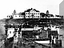

Zvjezdarnica nekada
Povijesni razvoj i značaj Pulske Zvjezdarnice kroz stoljeća
Mornarička Zvjezdarnica u
Puli
(Marinesternwarte) Austro-ugarska
Mornarička zvjezdarnica u Puli utemeljena je 1869. godine kao jedan od odjela Carskog i Kraljevskog Hidrografskog zavoda (ureda) Ratne mornarice (K. und K. Hidrographisches Amt), nakon što je grad 1853. godine postao glavna austrijska ratna luka. Već 1871. godine je na jednom od gradskih brežuljaka, Monte Zaru, podignuta namjenska zgrada za Hidrografski zavod.

Fotografija nove zgrade pulskog Hidrografskog zavoda (Zvjezdarnice) na Monte Zaru (foto: Erminio Mioni).
Začetci Pulske Zvjezdarnice naziru se još 1840. godine u Pomorskoj zvjezdarnici u Veneciji, koje je djelovala u sklopu austrijske Vojno-pomorske akademije. Nakon ratnih zbivanja 1848. godine, Austrija gasi Vojno-pomorsku akademiju u Veneciji i u Trstu 1850. godine utemeljuje novu Mornaričku akademiju, u čijem se sklopu kao odjel nalazi i Zvjezdarnica.
Utemeljenjem Hidrografskog zavoda u Puli 1869. god., u pulsku Zvjezdarnicu je preseljen dio inventara tršćanske Zvjezdarnice. Zavod je imao četiri odjela: Zvjezdarnica, Spremište nautičko-fizikalnih instrumenata, Spremište pomorskih karata i Mornarička biblioteka.
U Mornaričkoj zvjezdarnici bile su ustrojene četiri službe: Služba točnog vremena, Kronometarska služba, Meteorološka služba i Geomagnetska služba. Koristili su se vrlo moderni instrumenti za to doba.
Pulska Carska i Kraljevska Mornarička zvjezdarnica (K.u.K. Marine Sternwarte) najstarija je astronomska ustanova na području Republike Hrvatske.
Zahvaljujući izuzetnom zalaganju austrijskog astronoma Johanna PALISE, u desetak godina (1871-1880), Mornarička zvjezdarnica u Puli upisala se u trajnu listu eminentnih astronomskih svjetskih promatračnica. Otkriveno je i evidentirano čak 28 novih planetoida, od kojih je jedan dobio naziv "Istra".
Uz Palisu, značajna imena su i Ivo BENKO, Bernhard WALTER, Spiridion GOPČEVIĆ (Leo Brenner), Oton KUČERA i Niko MILIČEVIĆ.
Razdoblje između ratova
Sudbina Zvjezdarnice nakon raspada Austro-Ugarske monarhije i zaposjedanjem Istre po talijanskoj vojnoj sili, podudara se sa općom stagnacijom grada Pule. Astronomski instrumenti i biblioteka su preseljeni u Trst i druge talijanske gradove, a pulski Hidrografski zavod preimenovan je u talijanski Kraljevski Hidrografski institut. Provodila su se meteorološka i geomagnetska opažanja, dok su astronomska potpuno zamrla.
Drugi svjetski rat i razaranje
1944. godine anglo-američko borbeno zrakoplovstvo je tijekom bombardiranja Pule razorilo zgradu Zavoda. Djelomično je ostao sačuvan samo dio sjeveroistočnog krila.
Nakon obnove 1947/48. godine tu je smještena meteorološka postaja. Godine 1973. utemeljeno je Astronomsko društvo "Istra", koje je 1982. godine obnovilo astronomske opservacije.
Poslijeratno razdoblje i obnova
Od povratka astronoma na pulsku Zvjezdarnicu, ulažu se ogromni napori u njenu obnovu:
- 1999. Obnovljen sustav glavne kupole (uz pomoć brodogradilišta "Uljanik").
- 2006. Izgrađena terasa za promatranja.
- 2009. U cijelosti obnovljena terasa, pročelje i okoliš.